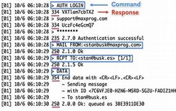
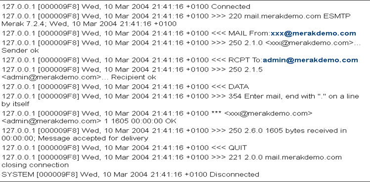

Simple Mail Transfer Protocol or in short SMTP is application layer protocol used for
transmission of email from client to the mail server, here client is responsible for the
initiation and closing of the email and the server are responsible for replying to the clients
call (Meaning responsible for answering the command received from client). SMTP is
used all around the world for sending of email and it has become a crucial part of office
life. SMTP standard operating port is port 25. SMTP is a connection-oriented protocol. This
means that a connection is established between the SMTP server and the SMTP client before
any data is transferred. Once the connection is established, the SMTP client can issue
commands to the SMTP server, and the SMTP server can respond to those commands. SMTP is
a delivery protocol only.
STMP Commands
The SMTP commands define the mail transfer system function requested by the
user. SMTP commands are character strings terminated by <CRLF>. The command codes
themselves are alphabetic characters terminated by <SP> if parameters follow and <CRLF>
otherwise. The syntax of mailboxes must conform to receiver site conventions. SMTP uses a
simple, text-based command set. The most common commands are:
HELO: It helps to initiate connection with a SMTP server.
EHLO: It helps making a connection with a SMTP server and to request extended SMTP
Features.
MAIL FROM: It is used to specify the sender of a message.
DATA: It is used to specify a message body.
RSET: It is used to restart the current session.
VRFY: It verifies and validates the address of a recipient.
RCPT TO: It is used to specify recipient of a message.
EXPN: It can be used for expansion recipient's address.
QUIT: It is used to terminate a connection.
AUTH: It is used in authentication of client to the server
HELP: It is used in SMTP sever to issue a help request.
SMTP is a message-oriented protocol. It implies that messages are transferred as a sequence
of lines of text, with each line terminated by a carriage return and a line feed.
The first line of a message is the SMTP command, and the remaining lines are the message
body. The message body can be any text, including headers, signatures, and so forth.
SMTP uses ASCII character set. Which implies that a character which is outside of ASCII
range (0-127) must be encoded using a mechanism such as Base64.
SMTP also supports eight-bit character sets, but this is not common.
SMTP is a reliable protocol. This means that messages are transferred using a error-checking
mechanism, and that messages are not lost or corrupted in transit.
SMTP can be used to send and receive messages in a number of different formats, including:
Plain text like HTML etc.
The most common format is plain text, which can be read by any email client. HTML and MIME
are more advanced formats that allow for the sending of attachments and other rich content.
SMTP is a simple protocol, but it is also very flexible. It can be used to send and receive
messages in a variety of different formats, and it can be extended to support new features and
capabilities.
RFC
What is RCF?
RFC (Request for Comments) is a publication by the principal technical development and
standards-setting bodies. RFC issues research, methods and ideas about the internet and its
application. There are group of capable scientists and engineers. RCF has become an official
document for standards of internet protocols, specifications and more. Here are some few
RCF on SMTP.
RFC 821
The RFC 821 published to normalize the utilization o f the use of information exchange which
on will be known as Simple Mail Transfer Protocol. The concepts for this protocol
implementation for any platform is established by this RFC. This model represents the first
definition of an email transfer over any network. The first point defines that the content to be
used in the transfer will be composed exclusively of a very specific set called the US-ASCII
characters.
There are three moves toward SMTP mail exchanges. The exchange is begun with a MAIL order
which gives the shipper recognizable proof. A progression of at least one RCPT orders follows
giving the collector data. Then a DATA order gives the mail information. Lastly, the finish of mail
information pointer affirms the transaction. The first step in the procedure is the MAIL
command.
The command contains the source mailbox.
MAIL FROM:
This command tells the SMTP-receiver that a new mail transaction is starting and to reset all its
state tables and buffers, including any recipients or mail data. It gives the reverse-path which
can be used to report errors. If accepted, the receiver-SMTP returns a 250 OK reply. The can
contain more than just a mailbox. The is a reverse source routing list of hosts and source
mailbox. The first host in the should be the host sending this command This definition indicates
that a new mail transfer should begin with the MAIL command used to indicate its origin.
RFC 2821
In the year 2001, the RFC 2821 obsoletes 821 to neutralize the ascending of email dangers. The
principal contrasts are portrayed underneath.
Roughly 10 years in 1990, after RFC821 was finished, the convention was changed with a
New model that allows the client and server t consent to use shared
usefulness past the first SMTP necessities. The SMTP expansion component characterizes a
method by which a lengthy SMTP client and server may perceive one another, and the server
can illuminate the client with regards to the help expansions that it upholds.
EHLO changes to HELO:
Contemporary SMTP executions MUST help the fundamental expansion mechanics. IN this
case, servers MUST help the EHLO order regardless of whether they carry out a particular
augmentations and clients SHOULD specially use EHLO instead of HELO. (Nonetheless, for
similarity with more seasoned adjusting executions, SMTP clients and servers MUST help
the first HELO systems as a backup plan.) Unless the various qualities of HELO must
be recognized for interoperability purposes, this report examines just EHLO.
RFC 5321
In October 2008 the last and latest correction to the SMTP Protocol was made. This is as yet
a draft RFC. In any event, when it doesn′t incorporate any crucial changes, it offers a more far
reaching clarification on certain areas like hand-off and the right utilization of record moves
utilizing MIME types. Alongside this RFC, the 5322 was likewise distributed to refresh the
construction of the IM (Web Message Format). This correction offers a few change that work on
the utilization off on different conventions like DKIM.
The RFC archives give us the
information we really want to decipher and examine the information transmission through
SMTP Protocol, the organization they should comply, the request each mail part should be in
and the capability of the relative multitude of orders utilized in the SMTP discussion. By and by,
this data can't be held back in a solitary Recursive. On the off chance that we are
to concentrate on the full situation of the convention, we should study other records to
finish this information.
Message Format
RFC 822 has defined the SMTP email addresses format. The MAPI components handle the address that agree with the norms. However, there is a particular form of RFC 822 address that best encodes MAPI addresses:
display-name<email-address>
The angle brackets are included as literals. Blanks are common in display names; they need not be quoted. A typical address might look like this one, which belongs to one of the coauthors of RFC 1521:
Nathaniel Borenstein <nsb@bellcore.com>
If the display name contains characters that have special meaning in SMTP addresses, such as < or @, the entire display name should be enclosed in double quotes. On outbound mail, if the total length of the email address plus display name exceeds 255 characters, the display name should be dropped.

Message Sequence
The message sequence is the order in which the message types must be sent. The
message sequence for SMTP is:
HELO/EHLO
MAIL
RCPT
DATA
QUIT

Message Syntax
The message syntax is the format of the message. The message syntax for SMTP is:
[message type] [message]
The message type is the first item in the message and indicates the action to be taken. The
message is the second item in the message and contains the data to be processed.
Connection Type
The type of connection is the way in which the message is sent. There are two types of
connections in SMTP:
1. Simple Mail Transfer Protocol (SMTP)
2. Extended Simple Mail Transfer Protocol (ESMTP)
3. It uses port 25.
SMTP is the basic protocol and is used to send mail. ESMTP is an extension of SMTP and
is used to send mail with additional features such as file attachments.